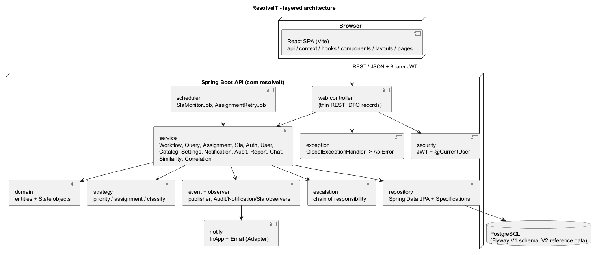
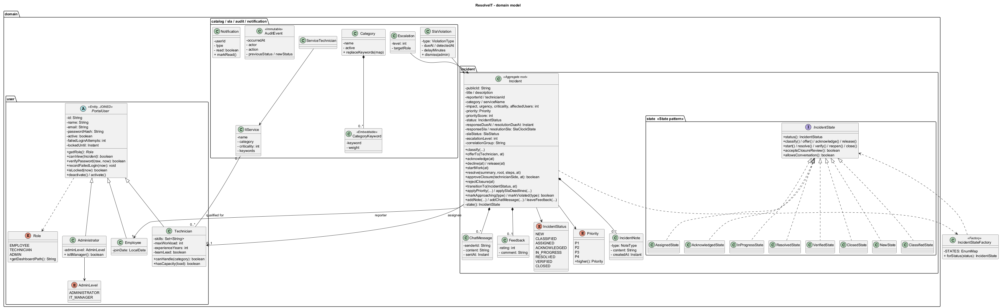
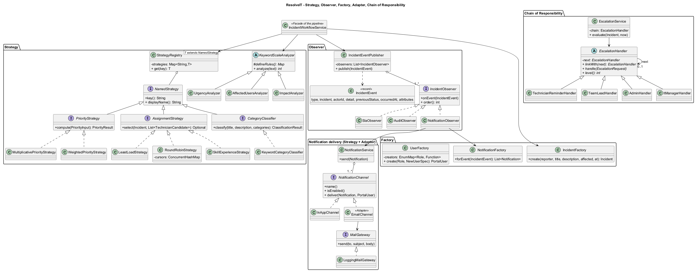
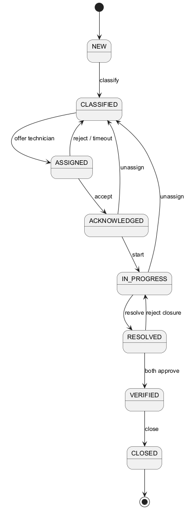
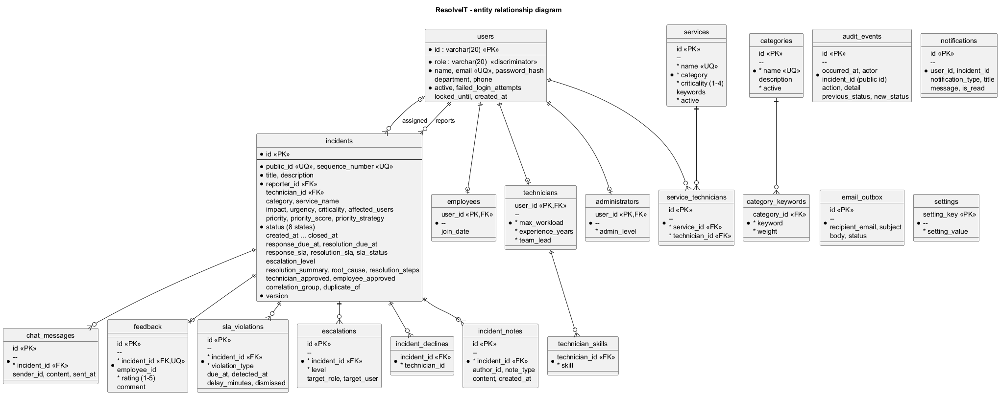

Object-Oriented Programming project report, Semester 1, 2026-2027
| Group number | |
|---|---|
| Members | |
| Repository | |
| Date | 22 November 2026 |
IT service interruptions often arrive through informal chats and hallway conversations. That fragments ownership, obscures urgency, encourages duplicate reports, and leaves no durable timeline. ResolveIT makes the incident lifecycle visible from report to closure and gives employees, technicians, and administrators views suited to their work.
Stakeholders are employees who need a clear path to support; technicians who need a fair, organized queue; and administrators who need service health, policy controls, audit and reporting. The assignment scenario of an unavailable payment application is the golden path.
Assumptions: one university IT group, one organisation, simulated email, and demo users for coursework. Cloud deployment, mobile apps, SSO, attachments and model training are out of scope. The complete assumption register is docs/ASSUMPTIONS.md.
Users register or sign in to a role portal. Employees report incidents, follow status and provide closure feedback. Technicians accept work, investigate, request information, resolve and participate in closure approval. Administrators monitor incidents, audit events, SLA status, service configuration, strategies and analytics.
The pipeline validates and normalizes a report, checks near duplicates, classifies by weighted keywords, identifies a service, derives impact and urgency, computes priority, determines response and resolution deadlines, assigns a technician, then records events and notifications.
Use layered APIs, responsive role views, explicit domain encapsulation, persistent incident records, structured failures, secure ownership checks, testable OOP behavior, and reproducible setup. Production authorization and credential storage require the security work tracked in the assumptions register.
Inputs are four 1-4 scales: impact and urgency (derived from the description), the business criticality of the affected service, and the number of affected users (chosen by the employee or derived from the text). Default (multiplicative) score = max(impact, affected users) × urgency × criticality (range 1-64): P1 >= 36, P2 18-35, P3 8-17, P4 <= 7. Payment outage: 4 × 4 × 4 = 64, P1. The alternative weighted strategy scores (0.35·impact + 0.25·urgency + 0.25·criticality + 0.15·affected users) / 4 × 100: P1 >= 85, P2 >= 65, P3 >= 40. The administrator switches strategy at runtime; see section 8.4.
| Priority | Response | Resolution |
|---|---|---|
| P1 | 5 min | 30 min |
| P2 | 15 min | 2 hours |
| P3 | 1 hour | 8 hours |
| P4 | 4 hours | 24 hours |
Lifecycle: NEW → CLASSIFIED → ASSIGNED → ACKNOWLEDGED → IN_PROGRESS → RESOLVED → VERIFIED → CLOSED. Each status is a State object that rejects skipped or terminal transitions with InvalidStateTransitionException (HTTP 409). SLA warnings fire at 80 % of a target (configurable); breaches are recorded once, and unacknowledged P1/P2 incidents escalate technician → team lead → admin → IT manager.
ResolveIT is a layered client-server system (diagram source: docs/uml/architecture.puml).
api (Axios client with JWT and error interceptor), context (authentication), hooks, utils, components, layouts and pages/{auth,employee,shared,admin}. TanStack Query polls notifications, chat and lists every 5 seconds.web.controller that accept validated DTO records and return DTO records. The authenticated user is injected with @CurrentUser (JWT verified by security.JwtTokenService). exception.GlobalExceptionHandler turns every failure into a uniform ApiError.service): IncidentWorkflowService (creation pipeline and lifecycle actions), IncidentQueryService (lists, detail, search), AssignmentService, SlaService, escalation.EscalationService, NotificationService, AuditService, ReportService, ChatService, CatalogService, UserService, AuthService, SettingsService, SimilarityService, IncidentCorrelationService.domain): JPA entities with behaviour. Incident is the aggregate root and delegates lifecycle rules to IncidentState objects.strategy): priority, assignment and classification algorithms selected at runtime from the settings table.event, observer): services publish IncidentEvents; SlaObserver, AuditObserver and NotificationObserver react. Notifications are delivered through every NotificationChannel (in-app, email adapter).SlaMonitorJob (warnings, violations, escalations; every 30 s) and AssignmentRetryJob (unassigned incidents, P1 first; every 60 s).Request flow example (create incident): IncidentController → IncidentWorkflowService.createIncident → IncidentFactory, KeywordCategoryClassifier, CatalogService.resolveService, analysers, PriorityStrategy, SlaService, IncidentCorrelationService, AssignmentService → repositories → PostgreSQL; each step publishes an event that the observers turn into audit rows and notifications.

PlantUML sources are in docs/uml/ (render with java -jar plantuml.jar docs/uml/*.puml; the smetana layout needs no Graphviz).
| Diagram | File | Content |
|---|---|---|
| Architecture (component) | architecture.puml | Layers and their dependencies |
| Domain class diagram | classes.puml | PortalUser hierarchy, Incident aggregate with composition of notes, chat and feedback, the eight State classes, catalog, SLA, audit and notification entities, associations and multiplicities |
| Pattern class diagram | patterns.puml | Strategy (priority, assignment, classifier, registry), Observer, notification Strategy + Adapter, Factory, Chain of Responsibility |
| State diagram | lifecycle.puml | NEW → CLASSIFIED → ASSIGNED → ACKNOWLEDGED → IN_PROGRESS → RESOLVED → VERIFIED → CLOSED with the reject / release / reopen paths |



| Layer | Technology | Version |
|---|---|---|
| Language | Java | 17 (source/target; built and tested on JDK 25) |
| Backend framework | Spring Boot (Web, Data JPA, Validation, Security, Scheduling) | 3.3.5 |
| ORM | Hibernate ORM | 6.5 (via Spring Boot) |
| Database | PostgreSQL | 15+ (verified on 18.7) |
| Schema migrations | Flyway | 10 (via Spring Boot) |
| Authentication | HS256 JWT (custom signer), BCrypt (strength 10) | Spring Security Crypto |
| Testing | JUnit 5, Spring Boot Test, MockMvc, H2 (tests only, PostgreSQL mode) | via Spring Boot 3.3.5 |
| Build | Maven (wrapper) | 3.9 |
| Frontend | React, React Router, Vite | 18.3, 6.28, 5.4 |
| Frontend data and UI | Axios, TanStack Query, Recharts, lucide-react, react-hot-toast, Tailwind (base) | see frontend/package.json |
| Diagrams | PlantUML | sources in docs/uml |
| Optional infrastructure | Docker Compose (PostgreSQL 15) | docker-compose.yml |
PortalUser hierarchy to tables. Interfaces plus dependency injection give runtime polymorphism for strategies, channels and observers. Enums with behaviour (IncidentStatus, Priority) and records (DTOs, events) keep data and rules together.PostgreSQL schema managed by Flyway (backend/src/main/resources/db/migration): V1__schema.sql creates every table, constraint and index; V2__seed_reference.sql inserts categories with 150+ classifier keywords, nine IT services with criticality and detection keywords, the SLA policy and the strategy settings. Hibernate runs with ddl-auto=validate. Demo people and November 2026 demo incidents are created by seed/DemoDataSeeder and seed/DemoIncidentSeeder through the real services.
| Table | Purpose and key columns |
|---|---|
users | Shared account data (JOINED inheritance root): id PK (E101/T201/A001), role discriminator (CHECK), email UNIQUE, password_hash (BCrypt), active, failed_login_attempts, locked_until |
employees, technicians, administrators | Subclass tables keyed by user_id → users.id; technicians: max_workload (CHECK 1–50), experience_years, team_lead; administrators: admin_level |
technician_skills | Technician skill categories (PK technician_id + skill) |
categories, category_keywords | Dynamic categories; weighted keywords for the classifier |
services, service_technicians | IT service catalog (criticality CHECK 1–4) and qualified technicians (UNIQUE service + technician) |
incidents | Aggregate root: public_id UNIQUE, sequence_number UNIQUE, reporter/technician FKs, category, service, impact/urgency/criticality/affected_users (CHECK 1–4), priority, score, strategy, status (CHECK of the eight states), all lifecycle timestamps, response/resolution deadlines, response_sla, resolution_sla, sla_status, escalation_level, resolution fields, approvals, correlation_group, duplicate_of, version (optimistic locking). Indexed on status, priority, reporter, technician, created_at, service, correlation group |
incident_declines | Technicians who declined an incident (never offered again) |
incident_notes, chat_messages | Composition children of an incident (ordered by time) |
feedback | One rating (CHECK 1–5) per incident (UNIQUE incident_id) |
sla_violations | One row per breached clock (UNIQUE incident + type), delay, dismissed flag |
escalations | One row per escalation level (UNIQUE incident + level), target role and user |
audit_events | Append-only history: time, actor, incident (or SYSTEM), action, detail, previous/new status |
notifications, email_outbox | In-app notifications per user; simulated email deliveries |
settings | Key/value configuration (strategies, warning percent, SLA minutes per priority) |
Relationships: users 1–1 subclass rows; incident N–1 reporter and N–1 technician; incident 1–N notes, chat messages, violations, escalations and declines; incident 1–0..1 feedback; service N–N technician through service_technicians; category 1–N keywords. The ER source is docs/er/er.puml.

Sample rows (demo data): INC1001 "Payment gateway returns error 502", reporter E101, category Application, service Payment, impact 4, urgency 4, criticality 4 → P1 score 64, status CLOSED, response SLA VIOLATED; settings('sla.P1.response.minutes','5'); services('Payment', criticality 4).
This section maps every OOP concept and design pattern to the real classes in backend/src/main/java/com/resolveit. Every pattern class carries a one-line comment naming its pattern.
web.controller (thin REST controllers, DTO records only) → service (application services, all business rules) → domain (entities with behaviour, State objects) → repository (Spring Data, JPA Specifications) → PostgreSQL via Flyway. Cross-cutting concerns: exception.GlobalExceptionHandler, event.IncidentEventPublisher (Observer), scheduler jobs, security.CurrentUserArgumentResolver.
The original single ResolveIqService god class (470 lines) was split into: AuthService, UserService, CatalogService, SettingsService, IncidentWorkflowService, IncidentQueryService, AssignmentService, SlaService, NotificationService, AuditService, ReportService, ChatService, SimilarityService, IncidentCorrelationService and escalation.EscalationService. Controllers no longer return Map<String,Object>. They return records from web.dto. In-memory caches of users, notifications, audit and settings were removed, and everything is read from repositories.
| Concept | Where | File(s) |
|---|---|---|
| Encapsulation | Incident has no public setters. Status changes only through classify, offerTo, acknowledge, decline, release, startWork, resolve, approveClosure, rejectClosure. PortalUser hides the BCrypt hash and lockout counters behind verifyPassword / recordFailedLogin / isLocked. Collections are exposed read-only (Collections.unmodifiableList/Set). A test (IncidentStateTest.incidentHasNoPublicStatusSetter) enforces this. | domain/incident/Incident.java, domain/user/PortalUser.java |
| Abstraction | IncidentWorkflowService.createIncident hides a 10-step pipeline (validate, duplicate check, create, classify, resolve service, assess, prioritise, SLA, correlate, assign). SlaService hides policy lookup and fallback. AssignmentService hides eligibility and strategy selection. | service/IncidentWorkflowService.java, service/SlaService.java, service/AssignmentService.java |
| Inheritance (is-a) | Employee, Technician and Administrator extend abstract PortalUser (JPA JOINED tables users, employees, technicians, administrators). ImpactAnalyzer, UrgencyAnalyzer and AffectedUsersAnalyzer extend abstract KeywordScaleAnalyzer (template method defineRules). TechnicianReminderHandler, TeamLeadHandler, AdminHandler and ItManagerHandler extend EscalationHandler. Every domain exception extends ItsmException. | domain/user/*, strategy/priority/*Analyzer.java, escalation/*, exception/* |
| Polymorphism | PortalUser.getRole() and PortalUser.canView(Incident) are overridden per subclass and used for IDOR protection (AccessGuard.requireView) instead of role if chains. Strategy beans (PriorityStrategy, AssignmentStrategy, CategoryClassifier), IncidentState objects, NotificationChannels and EscalationHandlers are all selected and called through their interface at runtime. | domain/user/*, service/AccessGuard.java, strategy/*, notify/* |
| Interfaces | IncidentState, PriorityStrategy, AssignmentStrategy, CategoryClassifier, NamedStrategy, NotificationChannel, MailGateway, IncidentObserver; repositories are interfaces. | |
| Composition | Incident owns IncidentNotes and ChatMessages (cascade = ALL, orphanRemoval = true; constructors are package-private, so they can only be created through Incident.addNote / addChatMessage). Feedback is created only by Incident.leaveFeedback. IncidentWorkflowService is composed of classifier, priority and analyser strategies plus SLA, assignment, correlation and publisher collaborators injected through its constructor. | domain/incident/*, service/IncidentWorkflowService.java |
| Association / aggregation | Incident → reporter and technician (by id), Technician → set of skill categories (technician_skills), Service ↔ Technician (ServiceTechnician), Category → keywords (CategoryKeyword value objects). | domain/catalog/*, domain/user/Technician.java |
| Generics | StrategyRegistry<T extends NamedStrategy> is one registry type reused for three strategy families. | strategy/StrategyRegistry.java |
| Exception handling | ItsmException (errorCode, httpStatus, userMessage) → ResourceNotFound, ServiceNotFound, InvalidCredentials, AuthenticationRequired, AccountLocked, UnauthorizedOperation, Validation (field errors), InvalidStateTransition (from state + attempted action), DuplicateIncident (existing id), TechnicianUnavailable, WorkloadExceeded, Conflict, MissingSlaConfiguration (caught with fallback), ExternalService (502). One @RestControllerAdvice returns a uniform ApiError {timestamp, status, code, message, path, fieldErrors, details, correlationId} and maps DB outages to 503 without stack traces. | exception/* |
| Collections | EnumMap for state objects, role permissions, SLA defaults and user creators. TreeSet for skills. ConcurrentHashMap<String, AtomicInteger> for round-robin cursors. PriorityQueue for retrying unassigned incidents (P1 first). LinkedHashMap / TreeMap for ordered report data. Set for declined technicians. | factory/IncidentStateFactory.java, service/AssignmentService.java, strategy/assignment/RoundRobinStrategy.java |
| Pattern | Applied to | Classes |
|---|---|---|
| State | Incident lifecycle. Each status has one class; every action is illegal by default (InvalidStateTransitionException) and a state overrides only its legal moves. Incident delegates to IncidentStateFactory.forStatus(status). | IncidentState, NewState, ClassifiedState, AssignedState, AcknowledgedState, InProgressState, ResolvedState, VerifiedState, ClosedState |
| Strategy | Priority calculation, technician assignment, category classification. The active strategy is read from the settings table on every use, so the admin can switch it without a restart. | PriorityStrategy (MultiplicativePriorityStrategy, WeightedPriorityStrategy), AssignmentStrategy (LeastLoadStrategy, RoundRobinStrategy, SkillExperienceStrategy), CategoryClassifier (KeywordCategoryClassifier), StrategyRegistry |
| Observer | Services publish an IncidentEvent after every step instead of calling audit or notification code directly. Each observer runs in its own try/catch, so a failing observer never fails the main transaction. | IncidentEventPublisher, IncidentObserver, AuditObserver, NotificationObserver, SlaObserver |
| Factory | Creating incidents (next INC id), notifications (the recipient matrix), users (EnumMap of creators, no role switch) and state objects. | IncidentFactory, NotificationFactory, UserFactory, IncidentStateFactory |
| Adapter | EmailChannel adapts a Notification to an email through the MailGateway interface. While mail is disabled it writes email_outbox rows with status SIMULATED. A gateway failure is recorded as FAILED and raised as ExternalServiceException. | EmailChannel, MailGateway, LoggingMailGateway |
| Strategy (delivery) | Every notification goes through every enabled NotificationChannel. A new channel is one new bean. | NotificationChannel, InAppChannel, EmailChannel |
| Chain of Responsibility | Automatic escalation of unacknowledged P1/P2 incidents: technician → team lead → admin → IT manager, one level per elapsed response window, idempotent. | EscalationHandler, TechnicianReminderHandler, TeamLeadHandler, AdminHandler, ItManagerHandler, EscalationService |
| Repository | All persistence. The audit repository extends the bare Repository marker and declares only save and read methods, so no update or delete path exists. | repository/*, AuditEventRepository |
| Specification | Composable search filters behind GET /api/incidents/search. | IncidentSpecifications |
Inputs are four 1–4 scales: impact and urgency (derived from the text by ImpactAnalyzer / UrgencyAnalyzer), service criticality (from the IT service), and affected users (chosen by the employee or derived by AffectedUsersAnalyzer: 1 = just me, 2 = a few people, 3 = a team or department, 4 = everyone or customers).
score = max(impact, affectedUsers) × urgency × criticality (1–64). P1 ≥ 36, P2 18–35, P3 8–17, P4 ≤ 7.The larger of "how broken" and "how many people" defines the blast radius. Example: payment outage 4 × 4 × 4 = 64 → P1.
score = (0.35·impact + 0.25·urgency + 0.25·criticality + 0.15·affectedUsers) / 4 × 100 (25–100).P1 ≥ 85, P2 ≥ 65, P3 ≥ 40, else P4.
POST /api/auth/login takes an email or ID, the password and the portal. A wrong password, an unknown account and a wrong portal all return the same 401 INVALID_LOGIN message. Success issues an HS256 JWT (secret from JWT_SECRET, at least 32 bytes) that expires after four hours.423 ACCOUNT_LOCKED). Counters are stored in PostgreSQL and audited (LOGIN_FAILED, ACCOUNT_LOCKED).AccessGuard.requireRole) and the ownership (PortalUser.canView: an employee sees only incidents they reported, a technician only incidents offered or assigned to them, an admin all). This blocks IDOR: guessing another incident id returns 403. Tests cover these cases (T16, T17).X-Frame-Options: DENY and X-Content-Type-Options, and no stack traces in responses (500 returns a correlation id; details stay in the server log).version), and database constraints back the business rules.Known limitations: logout revocation is held in memory (a restart forgets revoked tokens, which still expire after four hours); there are no refresh tokens, MFA or rate limiting beyond the lockout; email is simulated; HTTPS must be provided by the deployment.
Run with cd backend && ./mvnw test (Windows ./mvnw.cmd test), and cd frontend && npm run build.
Latest run (22 Nov 2026): Tests run: 172, Failures: 0, Errors: 0, Skipped: 0; frontend production build succeeded.
The suite is split into focused classes:
IncidentStateTest (all 12 legal and 52 illegal lifecycle moves plus invariants), UserHierarchyTest, PriorityStrategyTest, AssignmentStrategyTest, ClassifierAndSimilarityTest, ObserverChannelEscalationTest (observer isolation, email adapter, network failure, JWT).IncidentWorkflowIntegrationTest, SlaEscalationIntegrationTest (pinned clock), ApiSecurityIntegrationTest (MockMvc) and AdminManagementIntegrationTest (including the November demo seeder).Coverage by category: normal flows, boundary values (priority bands, SLA warning at 80 %), invalid input (field errors, HTML stripping, weak passwords), every error in the assignment's list (invalid login, unauthorised, invalid incident, invalid transition, technician unavailable, workload exceeded, service not found, missing SLA configuration, duplicate, database failure, network failure, invalid input), authorisation per role (including IDOR), both priority strategies, all three assignment strategies, observers, channels, the escalation chain, SLA idempotency, search filters, similarity and feedback.
37 cases are documented with steps and real results in docs/TEST_CASES.md, together with a manual browser check of the employee, technician and administrator flows against PostgreSQL.
The demo plan covers the three intended workflows, a 15–20 minute run of show, examiner questions, and pre-flight actions in docs/demo-script.md. The team responsibility table is left for the group to complete because member names and group number were not supplied. The required recording and upload are human tasks.
| Member | Name | Area | Module to explain |
|---|---|---|---|
| 1 | UI / UX | Landing, dashboards, shared components | |
| 2 | Backend / APIs | Controllers, API behavior, errors | |
| 3 | Domain / OOP | User hierarchy, incident lifecycle | |
| 4 | Persistence | Schema, repository, reports | |
| 5 | Testing / intelligence | SLA monitor, assignment, tests |